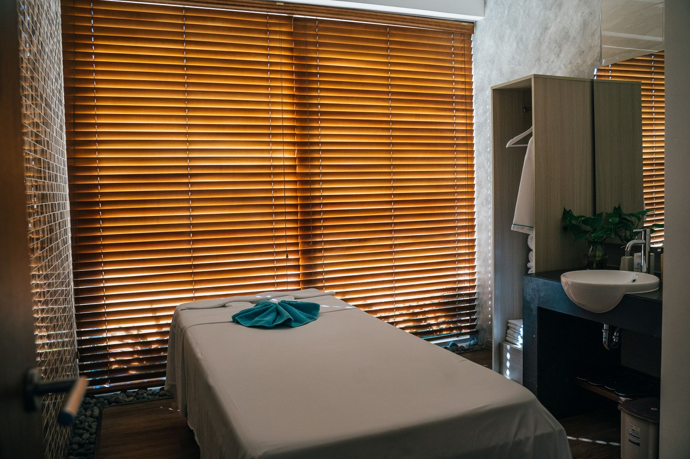

Physiotherapie in Rudersberg-Schlechtbach
Behandlung mit Zeitund ganzheitlichem Blick.
Krankengymnastik, Manuelle Therapie, Massagen und ein breites, laufend erweitertes Leistungsspektrum – persönlich behandelt statt im Akkord. Ich arbeite effizient, wirtschaftlich und zweckmäßig und baue dabei auch auf Ihre aktive Mitarbeit.
Warum diese Praxis
Physiotherapie mit persönlicher Note
Ganzheitlich behandelt
Ein breites Leistungsspektrum, laufend durch Weiterbildungen erweitert – für eine zielgerichtete Behandlung statt Schema F.
Aktive Mitarbeit gewünscht
Ich setze auf die aktive Mitarbeit und Eigenverantwortung meiner Patienten – gemeinsam zu einem nachhaltigen Behandlungserfolg.
Persönlich statt anonym
Als Einzelpraxis behandle ich Sie selbst – kurze Wege, feste Ansprechperson, keine wechselnden Therapeuten.
Leistungen
16 Behandlungsformen aus einer Hand
Von Krankengymnastik über Manuelle Therapie bis zur Kiefergelenkstherapie – ein Auszug aus dem Leistungsspektrum.
Krankengymnastik
Gezielte Bewegungstherapie zur Wiederherstellung von Beweglichkeit und Kraft.
Manuelle Therapie
Handgriffe zur gezielten Behandlung von Gelenk- und Muskelfunktionsstörungen.
Massagen
Klassische Massagetherapie zur Lockerung verspannter Muskulatur.
Lymphdrainage & Ödemtherapie
Sanfte manuelle Technik zur Anregung des Lymphflusses.
Elektro- & Ultraschalltherapie
Physikalische Verfahren zur Schmerzlinderung und Heilungsunterstützung.
Sportphysiotherapie & Taping
Gezielte Unterstützung bei Sportverletzungen, inkl. kinesiologischem Taping.
Über die Praxis
Breit aufgestellt, persönlich behandelt
Das Spektrum der Angebote in meiner Praxis ist breit und ganzheitlich ausgelegt und wird durch stetige Weiterbildungen in den verschiedensten Techniken qualifiziert. Dies ist für mich eine Grundvoraussetzung, um Ihnen eine zielgerichtete Behandlung zukommen zu lassen.
Ich arbeite effizient, wirtschaftlich und zweckmäßig. Dabei baue ich auch auf die aktive Mitarbeit und Selbstverantwortung meiner Patienten.
- 16 Behandlungsformen aus einer Hand
- Regelmäßige Fort- und Weiterbildung
- Termine nach telefonischer Vereinbarung, ohne unnötige Wartezeit

Termin vereinbaren
07183 9246295Bitte vereinbaren Sie Ihren Termin telefonisch – so vermeiden Sie unnötige Wartezeiten.
Kontakt & Anfahrt